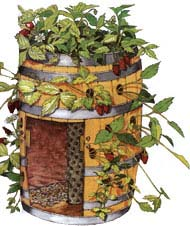

The keg halves lack the self-supporting integrity of a whole bent-stave barrel, so red oak (or other hardwood) cleats are installed with stainless screws to each half. The barrel is then placed on a small foundation of crushed rocks or brick. This not only provides a sure footing but will keep the bottom wood dry and rot free.